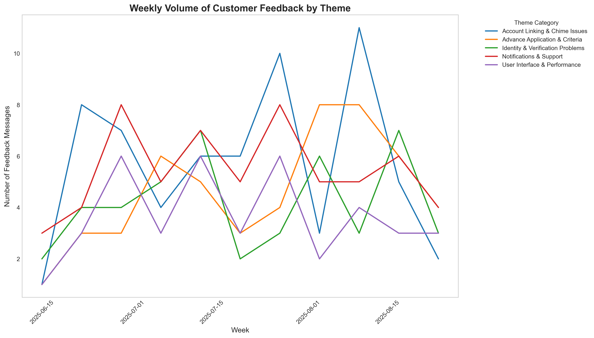
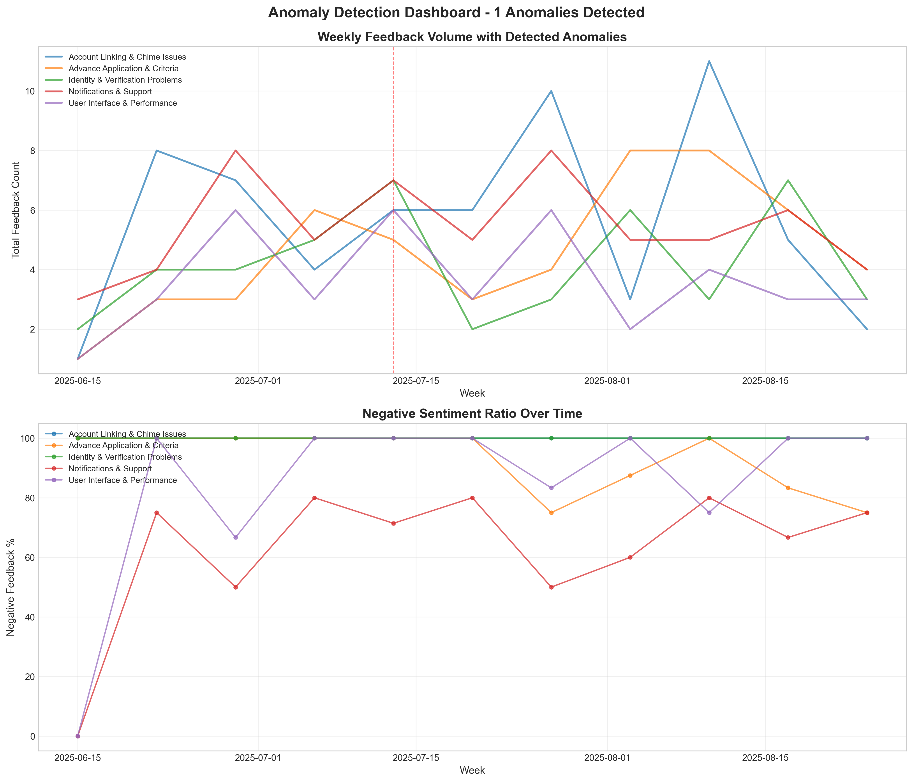

Top Theme Feedback Categories
Identity & Verification Issues
Advance Approval Clarity
Chime Account Integration
App Performance & Stability
Notification & Feature Appreciation
Recent Feedback
| Customer ID | Created At | Message | Concise Theme | Sentiment | Theme Category |
|---|
Weekly Trends

Trend Summary
Loading…
Anomaly Detection
